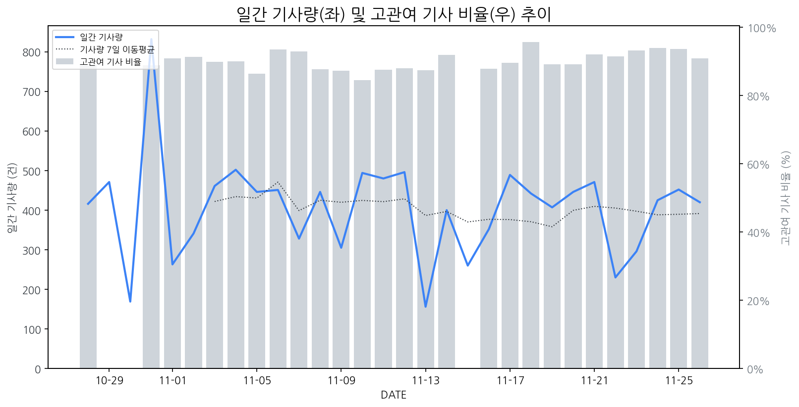

1
시장 활동 지표
기사량 추세 & 이상 징후 탐지
시장의 '전체 기사량'이 평소보다 비정상적으로 급증했는지(Spike)를 차트로 확인하고, LLM이 분석한 급등의 핵심 원인을 파악할 수 있음

고관여 기사란? 산업 연관 키워드로 수집된 기사들 중 디스플레이 키워드에 가중치를 반영하여 도출된 관련성 높은 기사
수집된 기사 수 (2025-11-26)
420
+3% WoW
기사량 변동 수준 (7일 이동평균 대비)
±6.7% 이하
2
오늘의 키워드
급격한 관심 ↑, 주목해야 할 키워드
1
hp
+1.9σ
HP가 PC 시장 부진 속 AI 기반 업무 재편을 위한 대규모 감원을 발표하며 주목받고 있습니다.
Related Metrics
금일 언급량: 5, 전일 대비: +4
Interpretation
PC 수요 감소 우려
Next Step
'hp' 관련 상세 기사 및 경쟁사 반응 모니터링
2
sk하이닉스
+1.6σ
SK하이닉스의 HBM 칩 관련 신제품 출시 및 기술력 인정 소식에 관심 집중.
Related Metrics
금일 언급량: 5, 전일 대비: +4
Interpretation
HBM 수요 증가, 디스플레이 장비 공급 기회.
Next Step
'sk하이닉스' 관련 상세 기사 및 경쟁사 반응 모니터링
3
실시간 Risk 키워드
경계해야 할 시그널 탐지
특정 토픽의 부정 감성 점수가 급등할 때 이를 즉시 탐지하고, "근거 기사" 링크를 통해 리스크의 실체를 빠르게 파악할 수 있음
키워드 분석 결과, 오늘은 걱정할 만한 하락 신호가 없습니다. (부정 언급량 변화: +1.5σ 이내)
4
주요 이벤트 모니터링
실시간 산업 동향 파악을 위한 주요 활동
최근 발생한 주요 기업들의 신제품 출시, 투자 등 주요 이벤트를 제공하여 매일 경쟁사 동향을 확인할 수 있음
IT 기기용 OLED 시장이 본격적으로 열리면서 삼성디스플레이와 중국 디스플레이 업체 간의 미래 기술 투자 경쟁이 가열되고 있습니다. 이는 IT용 OLED 패널 시장의 성장과 기술 발전을 가속화할 전망입니다.
Impact
IT용 OLED 시장의 성장은 고부가가치 디스플레이 기술 확보 경쟁을 심화시키고, 관련 소재 및 장비 산업에도 긍정적인 영향을 미칠 것으로 예상됩니다.
Next Step
기존 경쟁 우위를 유지하기 위해 차세대 OLED 기술 개발 및 생산 능력 확대를 가속화하고, IT 기기 시장 트렌드 변화에 대한 면밀한 분석을 통해 신규 시장 기회를 포착해야 합니다.
한국 기업들이 초고화질 마이크로 LED TV 시장에서 돌파구를 모색하고 있습니다. 이 기술의 성공은 향후 가격 경쟁력 확보 및 대중화에 달려 있습니다.
Impact
마이크로 LED 기술의 대중화는 디스플레이 시장의 고가 프리미엄 시장을 재편하고, 차세대 디스플레이 기술 경쟁을 심화시킬 것입니다.
Next Step
선도 기업들은 생산 비용 절감을 위한 기술 혁신과 효율적인 공급망 구축에 집중하여 가격 경쟁력을 확보해야 합니다.
수소차 관련주인 동아화성, 코오롱ENP, 아이에이가 강세를 보이며 시장의 관심이 집중되고 있습니다. 이는 수소차 산업에 대한 긍정적인 전망과 기대감을 반영하는 것으로 해석됩니다.
Impact
수소차 시장의 성장은 수소 생산, 저장, 운송 및 활용 전반에 걸친 기술 발전과 더불어 관련 부품 시장의 확대를 견인할 수 있으며, 이는 디스플레이 기술이 적용될 수 있는 잠재적 영역을 넓힐 수 있습니다.
Next Step
수소차 관련 기술 및 디스플레이 적용 가능성에 대한 선제적인 기술 동향 분석 및 사업 기회 모색을 시작해야 합니다.
한국은 ISSCC 2026에서 46편의 논문을 채택되었으며, 특히 삼성전자와 SK하이닉스가 메모리 분과에서 두각을 나타내며 기술 주도권을 확인했다. 이는 차세대 메모리 기술 개발에 대한 한국 기업의 역량을 보여준다.
Impact
이러한 메모리 기술 리더십 강화는 향후 디스플레이 패널의 성능 향상과 새로운 폼팩터 개발을 위한 첨단 메모리 솔루션 채택을 촉진할 수 있다.
Next Step
디스플레이 제조 기업은 삼성전자, SK하이닉스와 같은 선도적인 메모리 기업과의 협력을 강화하여 최신 메모리 기술을 디스플레이 제품에 통합하는 방안을 모색해야 한다.
화웨이가 자체 개발한 칩과 AI 기술을 탑재한 신제품 스마트폰 '메이트80'과 폴더블폰 '메이트 X7'을 전격 공개했다. 이번 신제품들은 듀얼 카메라를 포함한 고성능 사양을 갖춘 것으로 알려졌다.
Impact
화웨이의 강력한 자체 기술력 기반의 신제품 출시는 프리미엄 스마트폰 시장 경쟁을 심화시키고, 고성능 디스플레이 기술에 대한 수요를 더욱 증가시킬 것으로 예상된다.
Next Step
디스플레이 제조 기업은 화웨이의 최신 디스플레이 기술 요구 사항을 파악하고, 자체 기술 개발 및 파트너십 강화를 통해 경쟁력 있는 솔루션을 선제적으로 제안해야 한다.